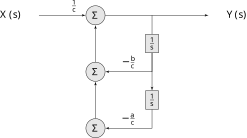

Lecture 24
State Space Techniques in CT
2026-05-12
Introduction
Thus far we have only considered single-input, single-output (SISO) CT systems. These can be described by an N-th order LCCDE, inpulse response \(h(t)\), or transfer function \(H(s)\), and, if stable, via the frequency response \(H(j\omega)\). In more complex systems we may be interested in multiple inputs, multiple outputs, and signals internal to the system.
Another term for signal is state and we actually have had multiple states in our systems, however we have removed them for analysis by reducing the system description to a SISO inpulse response or transfer function. To see this, consider a second-order LCCDE
\[a\, \frac{d^2y}{dt^2}(t) + b\,\frac{dy}{dt}(t) + c\, y(t) = x(t)\]
Recall from your differential equations course that this can also be represented by two, first-order LCCDEs. Let \(u_1(t) = y(t)\) and \(u_2(t) = \frac{dy}{dt} = \frac{du_1(t)}{dt}\). Then \(\frac{du_2}{dt} = \frac{d^2y}{dt^2}\) and the LCCDE is
\[a\, \frac{du_2}{dt^2}(t) + b\,u_2(t) + c\, u_1(t) = x(t)\]
Solving for \(\frac{du_2}{dt}\)
\[\frac{du_2}{dt} = -\frac{b}{a}\, u_2(t) - \frac{c}{a}\, u_1(t) + \frac{1}{a}\, x(t)\]
Noting \(\frac{du_1}{dt} = u_2\) gives the system of ODEs. Switching to dot notation for derivatives as is tradition (since we will only be dealing with first derivatives), we obtain the system of equations:
\[\begin{align*} \dot{u}_1 (t) &= u_2(t) \\ \dot{u}_2 (t) &= -\frac{b}{a}\, u_2(t) - \frac{c}{a}\, u_1(t) + \frac{1}{a}\, x(t) \end{align*}\]
Collecting \(u_1\) and \(u_2\) into a vector
\[\left[ \begin{array}{c} u_1 \\ u_2 \end{array}\right]\]
we can write the system as
\[\begin{align*} \dot{u} &= \left[ \begin{array}{cc} 0 & 1 \\ -\frac{c}{a} & -\frac{b}{a} \end{array}\right]\, u + \left[ \begin{array}{c} 0 \\ \frac{1}{a} \end{array}\right]\, x\\ &= A\, u + B\, x \end{align*}\] where \(A\) is the 2x2 matrix and \(B\) is a 2x1 matrix. This form, relating first derivatives of the state to a linear combinations of the states and inputs, is called a state equation. Solving the state equation gives is the state/signal for both \(u_1\) and \(u_2\). To get the same result as solving the original LCCDE, we need the observation equation, in this case a single output
\[y = [1 \; 0]\, u = C\, u\]
where \(C\) is a 1x2 matrix.
To see where these internal states have been hiding consider the direct form I implementation of this system
\[a\int\int y + b\int y + cy = x\]
solving for \(y\)
\[y = -\frac{a}{c}\int\int y - \frac{b}{c}\int y + \frac{1}{c}\, x\]
Converting to the Laplace domain (assuming zero initial conditions
\[Y(s) = -\frac{a}{c}\frac{1}{s^2} Y(s) - \frac{b}{c}\frac{1}{s} Y(s) + \frac{1}{c}\, X(s)\]
As a block diagram this looks like

The output of the integrator blocks correspond to the internal state variables.
TODO RESTART HERE